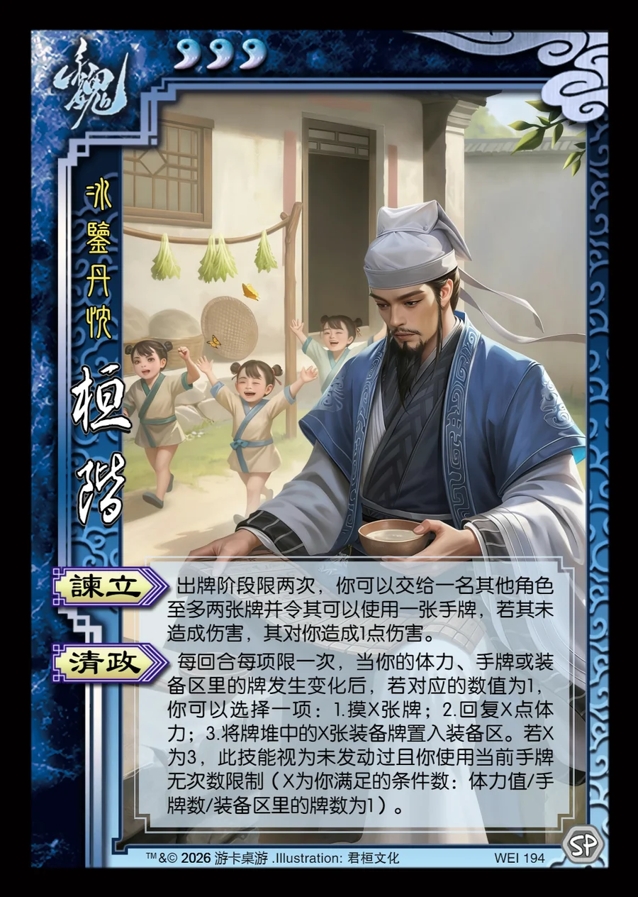

点击卡面查看大图
魏
桓阶
♥3冰鉴丹忱
谏立
出牌阶段限两次，你可以交给一名其他角色至多两张牌并令其可以使用一张手牌，若其未造成伤害，其对你造成1点伤害。
清政
每回合每项限一次，当你的体力、手牌或装备区里的牌发生变化后，若对应的数值为1，你可以选择一项：1.摸X张牌；2.回复X点体力；3.将牌堆中的X张装备牌置入装备区。若X为3，此技能视为未发动过且你使用当前手牌无次数限制（X为你满足的条件数：体力值/手牌数/装备区里的牌数为1）。